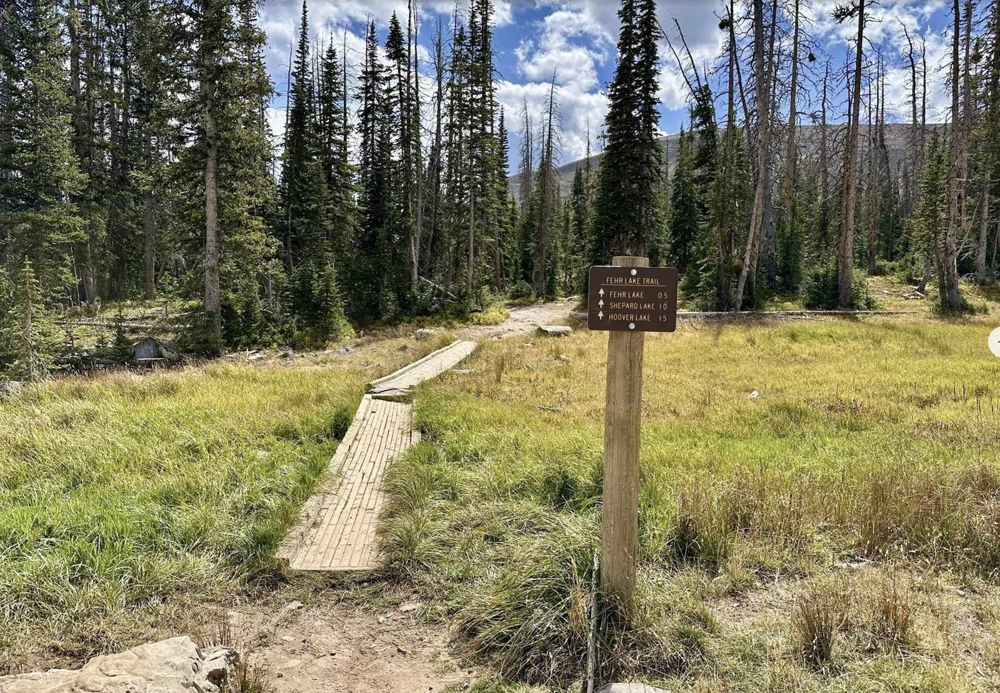
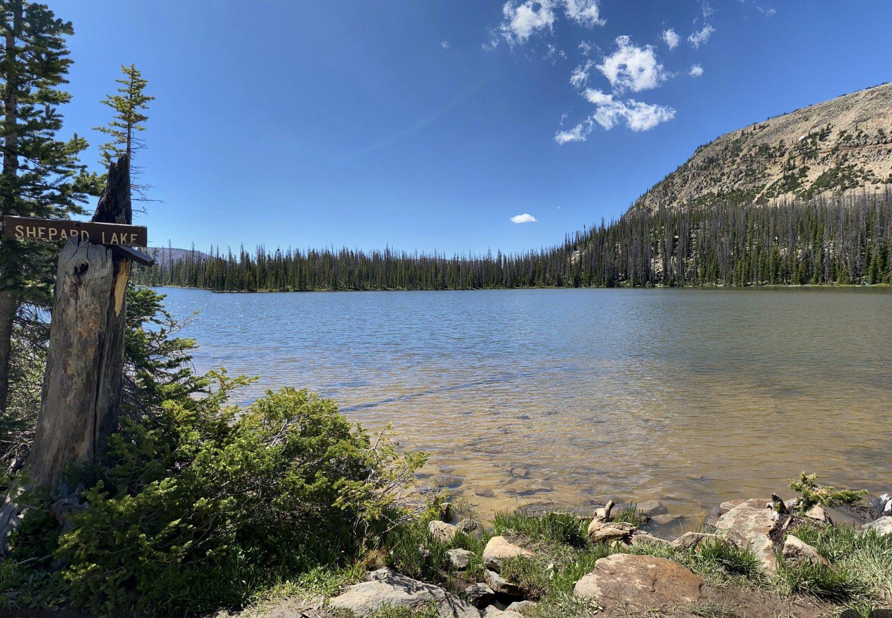
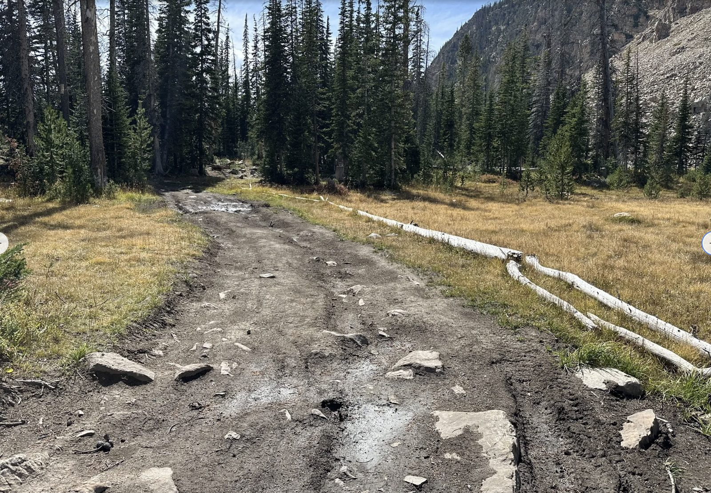

Map & Route
Interactive route map. Trail polyline is from a real recorded Gaia track. Switch basemaps with the top-right control. Drop your own GPX file in to overlay additional tracks.
The Plan
🥾 Boys hike
Fehr Lake Trailhead → Fehr Lake → Sheppard Lake → Hoover Lake. Maintained USFS trail with Uinta boardwalks. Descent through the basin. Real GPX track (trimmed to end at Hoover) is baked into the map.
🚙 Jeep shuttle (~3.25 mi)
Pickup at Hoover Lake. Hoover Lake Road south then west to Echo Lake camp. 30–45 min driving in low gear.



Coordinates
40.69300, -110.89186 · 10,260 ft · UT-150 MP 30.6, across from Moosehorn Campground40.66220, -110.89490 · 9,740 ft · SE shore campsitesDownloads
- Fehr_Lake.gpx — Gaia track from trailhead to Hoover Lake. Import into your own Gaia / OnX / Garmin.
Heads up: there's no cell signal anywhere from the trailhead to camp. Download Gaia offline maps and pre-load this GPX before you leave the highway. Leaders will be carrying a SPOT GPS for emergencies.